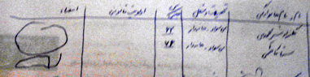

|
|

دوست داشتنی ترین امضا / نفیسه محمدی
چهار شنبه6 تیر 1386
خرم دره شهري در نزديكي ابهر است و دخترخاله ام تانيا در بيمارستاني در آن شهر كوچك شاغل است. اين بار كه براي ديدارش به ابهر رفته بوديم ما را با خودش به محل كارش برد.
من كه برگه هاي كمپين را هميشه همراه خودم دارم كلي خوشحال شدم و از او خواستم كه مرا به همكارانش معرفي كند تا درباره ي كمپين برايشان بگويم و امضا جمع كنم. تانيا هم با كمال ميل پذيرفت و از بدو ورود به بیمارستان از در نگهباني تا دیگر بخش ها ما را به همه معرفي كرد.وقتي كه او به اتاق كارش رفت من شروع به گشتن در بيمارستان كردم و به هر كدام از کارکنان بيمارستان يا همراهان بيماران كه مي رسيدم اگر موقعيت مناسب بود با او در باره ي اهداف كمپين حرف می زدم و امضا مي گرفتم. برخي از کارکنان بیمارستان به هيچ وجه حاضر به امضا نشدند. مي ترسيدند برايشان مشكلي به وجود آيد و توضيحات من هم راضي شان نكرد.
بخش زنان به تازگي بازسازي شده بود و هنوز بيشتر اتاق ها خالي بود . اكثر بيماران در اتاقي بزرگ تر از بقيه اتاق ها بستري شده بودند. وجود همراهان در كنار بيمارانشان اتاق را شلوغ تر كرده بود. از يكي از کارکنان آنجا - كه خودش هم برگه را امضا كرده بود و بعدا فهميدم كه او هم قرباني ازدواج اجباري در سن پايين و اعتياد همسر است- پرسيدم كه آيا مي توانم به آن اتاق بروم و امضا جمع كنم. با خوشحالي جواب مثبت داد و خودش هم تا نزديكي اتاق همراهي ام كرد. وارد اتاق كه شدم يكباره همه ي نگاه ها را متوجه ي خودم ديدم. از فرصت استفاده كردم و فورا گفتم : "خانوما اگه اجازه بدين مي خوام چند لحظه وقت جمع رو بگيرم." با ادامه ي سكوت جمع بنا را بر رضايت آنها گذاشتم و چند جمله اي در باره ي خودم و كمپين و اهدافش سخن گفتم و سپس شروع به خواندن بيانيه كردم.
متوجه شدم كه دوتا از زنان مسني كه روي تخت ها دراز كشيده اند زبان فارسي را متوجه نمي شوند و همراه يكي از آنها تند تند جملات مرا برايشان به تركي ترجمه مي كند. وقتي حرف هاي من تمام شد يكي از آنان فورا گفت :"خانوم بدين من برگه رو امضا كنم. من خودم از دست هووم الان اينجام !"
با امضاي او ديگران هم ترغيب به امضا شدند. يكي از خانم هايي كه فارسي نمي دانست و همراهش مترجم ما شده بود اصرار داشت كه برگه را به خانه ببرد تا خانواده اش هم امضا كنند. معلوم بود كه خودش مشكلاتي را كه من از آنها صحبت كرده بودم لمس كرده است. با عذرخواهي تقاضايش را رد كردم و در دل از اينكه در اين مورد پيش بيني هاي لازم را نكرده بودم و فرم بیانیه را به اندازه کافی نیاورده بودم خودم را ملامت كردم. وقتي كه بيانيه را براي امضا جلوي او گذاشتم گفت كه سواد ندارد و پرسيد كه آيا مي تواند انگشت بزند. و دوباره من خودم را ملامت كردم كه استامپ به همراه نداشتم. مجبور بودم خودم نامش را بنويسم . نامش را پرسيدم . با لهجه ي غليظ نامش را گفت و من كه دقيقا متوجه نشدم مجبور شدم كه نامش را از روي تابلوي كوچكي كه به ديوار بالاي تختش نصب شده بود ببينم. ازاو خواستم كه حداقل يك خط با دست خودش در محل امضا بكشد و او چنين كرد. خانمي كه در تخت كناري اش بود هم همان شرايط را داشت و از او هم خواستم هر جوري كه مي تواند برگه را امضا كند.

اين دو امضا خيلي برايم با ارزش بود و از آن به بعد وقتي به كسي برخورد مي كنم كه هم تحصيلكرده است و هم بيشتر از اين دو پيرزن به وضعيت جامعه آگاهي دارد ولي حاضر به امضا نيست واقعا متاسف مي شوم و از خودم و او مي پرسم : واقعا چرا؟!